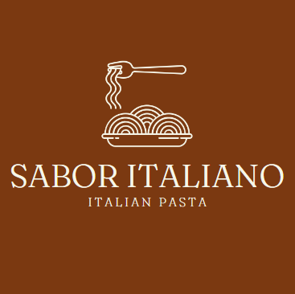
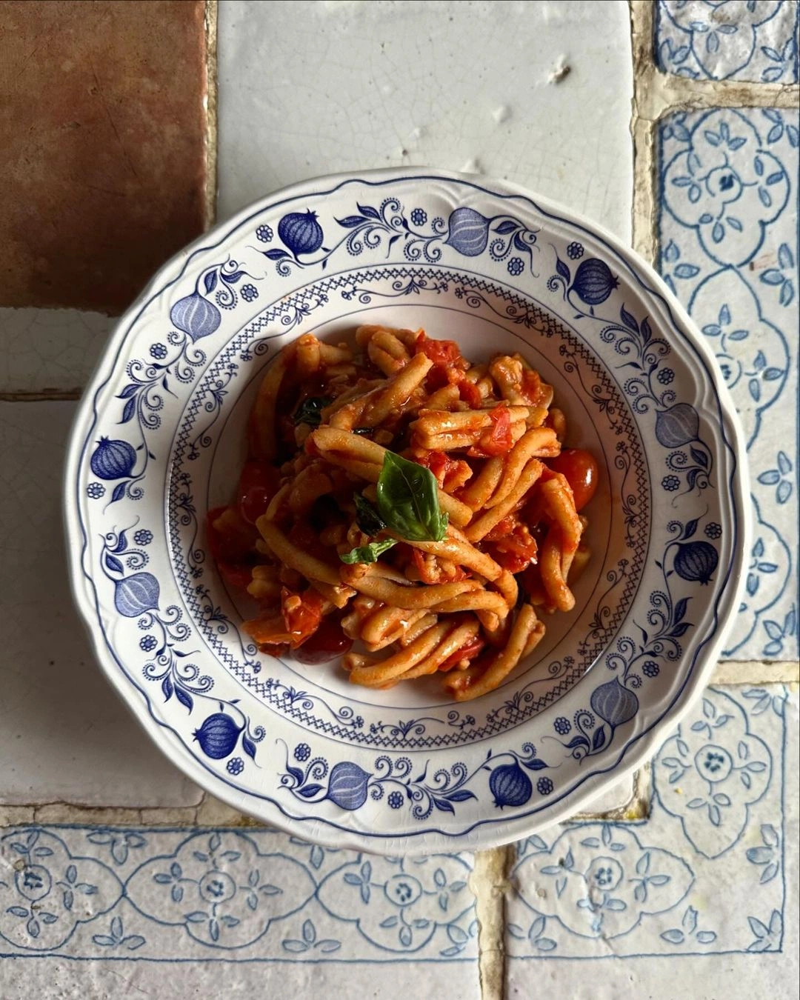

Sabor Italiano
Nossa história
O propósito do Sabor Italiano é compartilhar a rica tradição culinária da Itália, oferecendo receitas autênticas, dicas de preparo e informações sobre ingredientes típicos, além de explorar a história e a cultura por trás de cada prato. Nosso site serve tanto entusiastas da gastronomia quanto profissionais que desejam aperfeiçoar suas habilidades na cozinha italiana — com recomendações de restaurantes, produtos italianos e viagens gastronômicas, criando uma imersão completa nesse universo.